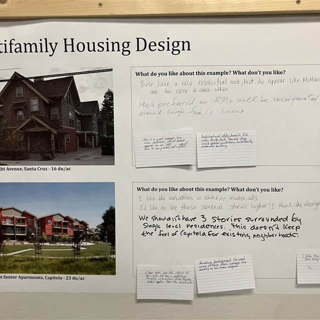

Services
Public participation & outreach
Public participation and outreach that bring community perspectives into the planning process.

Services
Public participation and outreach that bring community perspectives into the planning process.
